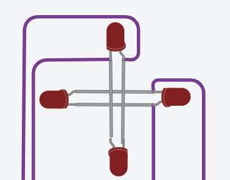

Bouw in TinkerCAD een schakeling waarin je een stappenmotor in full step aanstuurt via een L293D. De vier leds die de spoelen voorstellen moeten in de rondte oplichten en niet heen en weer springen.
Een stappenmotor werkt anders dan de DC motor van de vorige oefeningen. Hij draait niet vanzelf, maar jij duwt hem stap voor stap voort door de spoelen in de juiste volgorde te bekrachtigen. Wat er binnenin gebeurt, waarom TinkerCAD er vier leds van maakt en hoe de stappentabel eruitziet, staat op De stappenmotor. Die pagina heb je hier van begin tot eind nodig.
TinkerCAD heeft geen bruikbaar model van een stappenmotor, dus vervang je de motor door vier leds, twee per twee anti-parallel. Elk paar staat op de plaats van één spoel.

Elk led-paar hangt over één brug van de L293D: het eerste paar tussen 1Y en 2Y, het tweede tussen 3Y en 4Y. De vier ingangen 1A, 2A, 3A en 4A stuur je aan vanaf pin 2, 3, 4 en 5 van de Arduino. Beide enable-pinnen mag je vast aan 5 V hangen, want hier regel je de snelheid niet met PWM. De volledige aansluittabel staat op de referentiepagina.
De motorvoeding (Vcc2) komt uit een aparte bron, niet uit de Arduino. Zoals bij elke schakeling met twee voedingen moet de min van die voeding aan de GND van de Arduino. Zonder gemeenschappelijke massa hebben je stuursignalen geen referentie en doet de schakeling niet wat je bedoelt.
Er staan leds in je schakeling, en die hebben nog altijd een weerstand nodig. Eén weerstand per led-paar volstaat, want er brandt er per paar toch maar één tegelijk.
De stappentabel voor full step staat op De stappenmotor. Neem ze letterlijk over als array en loop er in je loop() doorheen. Na de laatste stap begin je weer bij de eerste.
De volgorde is spoel A, spoel B, spoel A de andere kant op, spoel B de andere kant op. Doe je eerst spoel A in beide richtingen en dan pas spoel B, dan schiet de rotor van 0 naar 180 graden en weer terug, en dan trilt hij in plaats van te draaien. Aan je leds zie je meteen welke van de twee je hebt. In de rondte is goed, om de beurt van links naar rechts niet.
Werkt je motor, hang er dan een potentiometer op A0 bij waarmee je de snelheid instelt.
Bij een stappenmotor is de snelheid hoeveel stappen per seconde je zet, dus je past de wachttijd tussen twee stappen aan in plaats van met PWM te werken. Herschaal de waarde van de potentiometer met map() naar een zinnig bereik, bijvoorbeeld van 2 tot 100 milliseconden.
Zet je de wachttijd te klein, dan volgt de rotor het magnetisch veld niet meer en slaat de motor stappen over. Hij bromt dan wel, maar hij draait niet meer, en je positie klopt niet meer. Bij een echte motor hoor je dat onmiddellijk. Elke stappenmotor heeft zo'n bovengrens.
Sla je oefening op.
Overloop volgende checklist om je oefening zelf te evalueren:
De stappentabel is een tweedimensionale array: elke rij is één stap, en per rij staat er voor elke motorpin een 1 of een 0. Zo staat de volgorde op één plek, leesbaar naast elkaar.
zetStap() schrijft één rij naar de vier pinnen. De variabele huidigeStap onthoudt waar je zit, en de restoperator % zorgt ervoor dat je na stap 3 weer bij 0 begint. Dat is korter en veiliger dan een if die op 4 test.
const int motorPinnen[] = {2, 3, 4, 5}; // 1A, 2A, 3A, 4A van de L293D
const int potPin = A0;
const int aantalStappen = 4;
// Elke rij is één stap. Per rij staat er voor elke motorpin een 1 of een 0.
// Let op de volgorde: A, B, A terug, B terug.
const int volleStap[aantalStappen][4] = {
{1, 0, 0, 0}, // spoel A, ene richting
{0, 0, 1, 0}, // spoel B, ene richting
{0, 1, 0, 0}, // spoel A, andere richting
{0, 0, 0, 1} // spoel B, andere richting
};
int huidigeStap = 0;
void zetStap(int stap)
{
for (int pin = 0; pin < 4; pin++)
{
digitalWrite(motorPinnen[pin], volleStap[stap][pin]);
}
}
void setup()
{
for (int pin = 0; pin < 4; pin++)
{
pinMode(motorPinnen[pin], OUTPUT);
}
}
void loop()
{
int potWaarde = analogRead(potPin);
// hoe hoger de potwaarde, hoe korter de wachttijd, hoe sneller de motor
int wachttijd = map(potWaarde, 0, 1023, 100, 2);
zetStap(huidigeStap);
delay(wachttijd);
huidigeStap = (huidigeStap + 1) % aantalStappen;
}Laat je de uitbreiding weg, dan vervang je de twee regels met de potentiometer door een vaste delay(10).